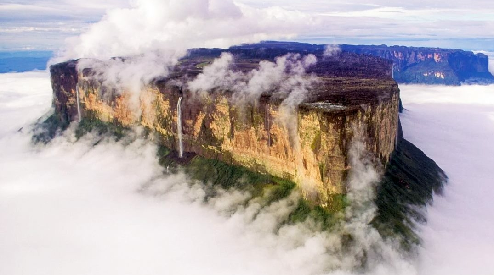

Roraima é o estado mais ao norte do Brasil, localizado na região Norte, fazendo fronteira com a Venezuela e a Guiana. Sua capital é Boa Vista, que é a única capital brasileira que fica totalmente isolada de outras capitais, sem rodovias ligando-a diretamente a outras grandes cidades do país. A economia de Roraima é baseada principalmente na agropecuária, com a criação de gado, além da exploração de recursos naturais, como madeira e minerais. O estado também é conhecido por suas belezas naturais, como o Monte Roraima, que inspirou a obra "O Mundo Perdido", de Arthur Conan Doyle. Roraima tem uma rica diversidade cultural, com presença significativa de comunidades indígenas e migrantes de outras partes do Brasil e do exterior.
